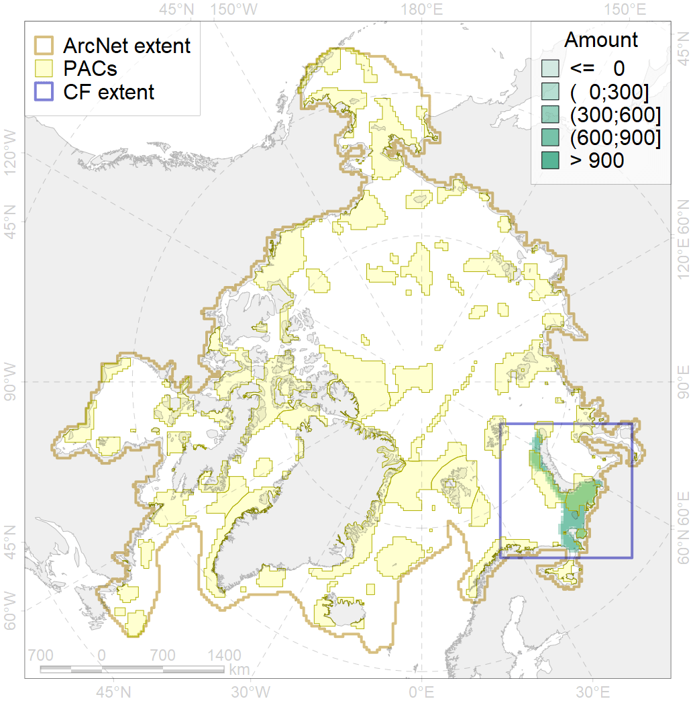
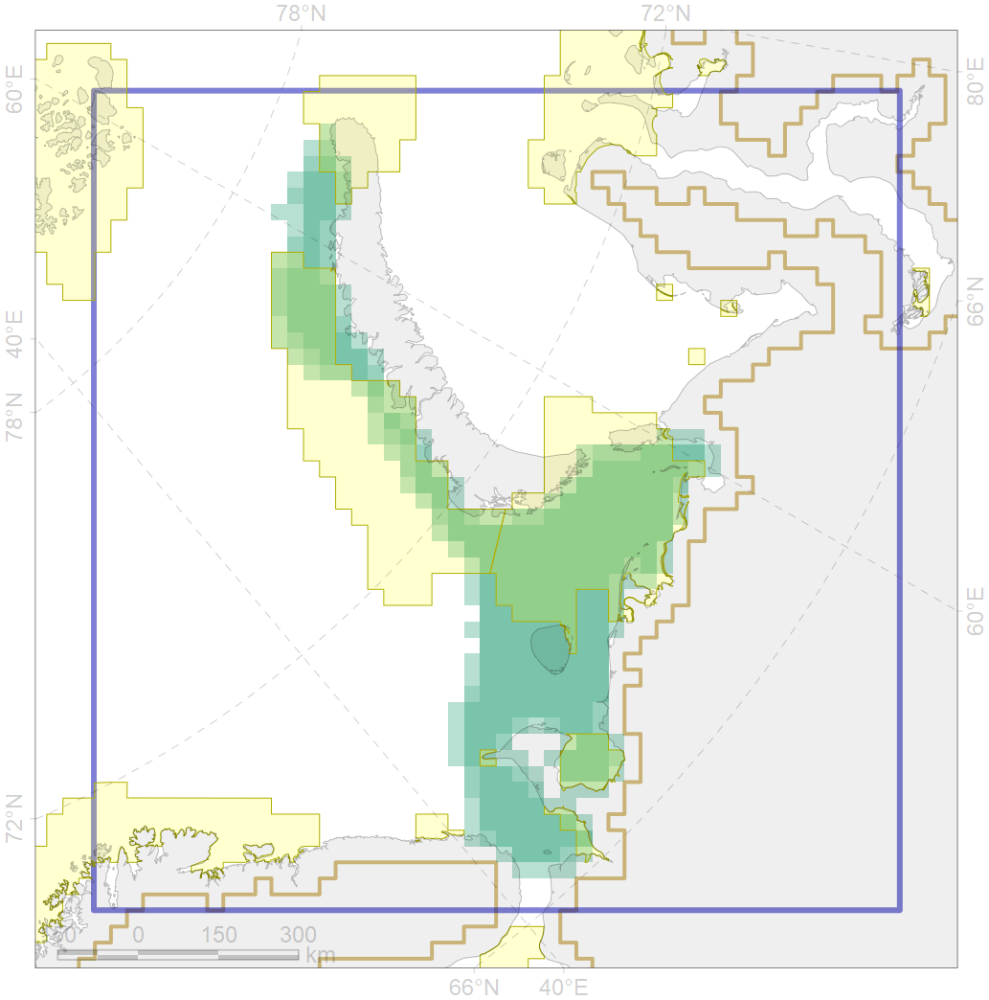

2003

| CF code | 2003 |
| CF name | Bearded seal whelping areas in the Barents Sea |
| Time Period | 2007-2018 |
| Source(s) | Surrogate data; sea ice conc files by Will Merritt prepared based on https://nsidc.org/data/seaice_index, bathymetry from http://www.naturalearthdata.com/downloads/10m-physical-vectors/ |
| Seasonality | March-June |
| Depth Horizon | 0-200 m |
| Methodology | Habitat preference research and expert input |
| Use Restrictions | Open source |
| Author Name | Irina Trukhanova |
| Notes | |
| Scenario’s Target | 0.24 |
| Target Achievement | 0.552 (Scenario: 229.9%) |
| PAC | Share of the Total Amount within the PAC | Share of the Target Achievement for the ArcNet | PAC’s Contribution to the Target Achievement |
|---|---|---|---|
| 19 | 1.1% | 4.7% | 2.0% |
| 20 | 33.4%34.9% | 135.0%141.0% | 58.7%61.3% |
| 21 | 15.1%16.1% | 58.4%62.1% | 25.4%27.0% |
| 23 | 3.5%3.8% | 13.1%13.9% | 5.7%6.0% |
| 24 | 0.8%1.0% | 3.0%3.7% | 1.3%1.6% |
| 25 | 0.2%0.2% | 0.3%0.5% | 0.1%0.2% |
| inner | 54.1%57.0% | 214.5%225.8% | 93.3%98.2% |
| outer | 45.9%54.1% | 15.4%44.6% | 6.7%19.4% |
| † supplement values are for area consistence whereas principal values are for Accenter compatible gridded stats |